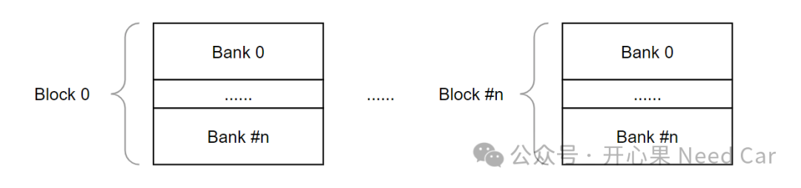
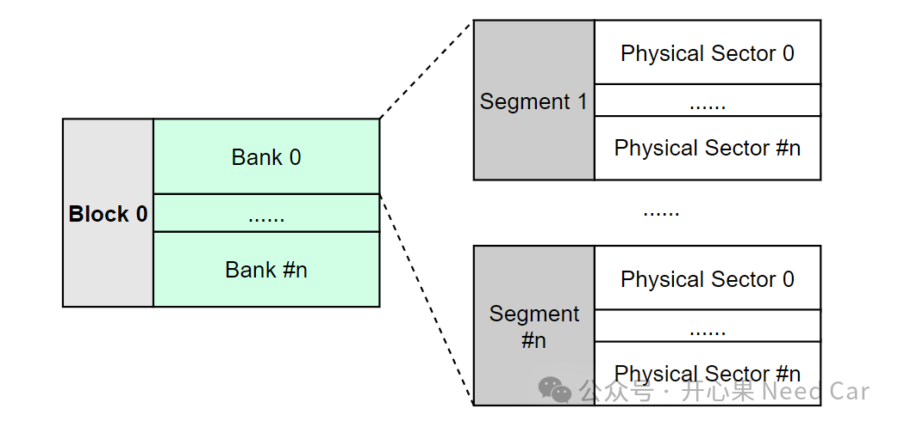
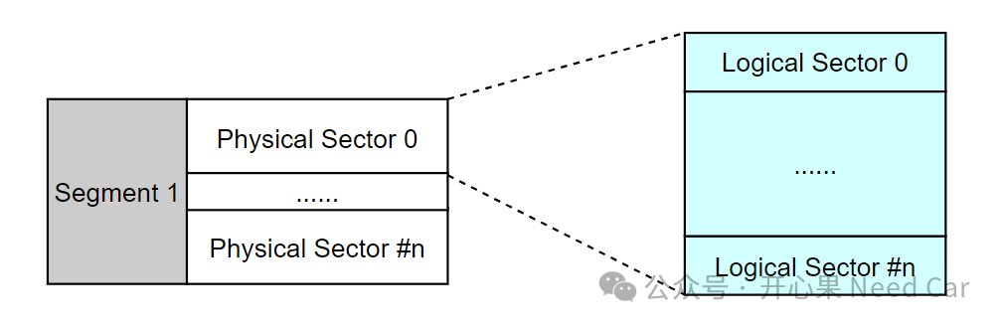
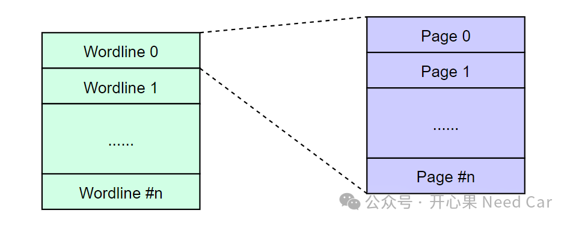
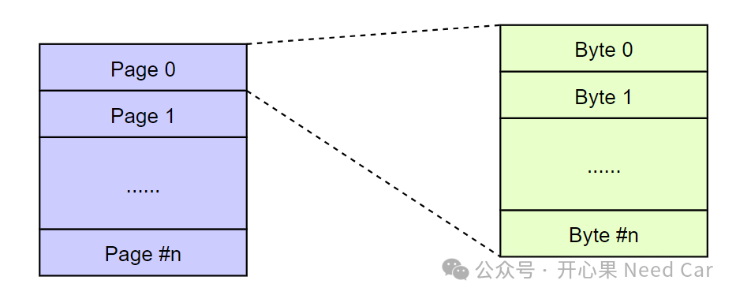

内存（Memory）是我们搞嵌入式开发永远绕不开的议题，它承载代码和变量，让这些信息可查询，可记忆，可操作。所以，搞嵌入式，需要夯实内存基本功。在之前的文章《NVM基础概念》，聊过一些内存概念，本文在此基础上，再做一些补充和细化。
提示：基于TC3xx讨论
聊嵌入式内存，很多时候，我们在讨论NVM（Non Volatile Memory，非易失性内存)。关于NVM的名词有很多，比如：Block、Bank、Segment、Physical sector、Logical sector、Wordline、Page等。- Block：由一个或者多个Bank组成，注意：不要与Autosar中的Block混淆。
- Bank：由多个Physical sector组成。Bank又分为PFlash Bank和DFlash Bank。PFlash Bank用于存储代码和常量，而DFlash主要用于存储数据，这些数据可以在程序运行时改变。
- Segment：由多个Physical sector组成，但是，包含的Physical sector数量不超过Bank所包含的数量。
- Physical sector：由多个Logical sector组成。
- Logical sector：由多个Page组成，是擦除（erase）操作的最小单位。
- Page：由多个字节组成，是写（write）操作的最小单位。对于PFlash，一个Page = 32 Bytes；而对于DFlash，一个Page = 8 Bytes。
（一）各内存单位关系
Block与Bank关系如下所示：

Bank、Segment、Physical Sector关系示意如下所示：

Physical Sector、Logical Sector关系，示意如下：
Logical Sector、Wordline关系，示意如下：

（二）Logical Sector与Wordline、Page、Byte关系
一个Logical Sector与Wordline、Page、Byte关系，示意如下：点击下方关注，一起聊聊Autosar/嵌入式，如果需要，联系作者进群，给你更专业的解答